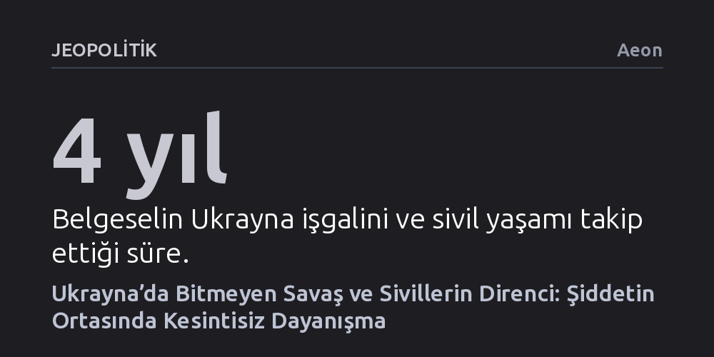

JEOPOLITIK · Aeon · 2026-10-22
Yönetmen Anders Hammer'ın belgeseli, Ukrayna'daki dört yıllık savaşta sivillerin yalnızca şiddet ve terörle değil, örgütlü bir insani dayanışmayla ayakta kaldığını gösteriyor. Yapım, çocuklarını yurt dışına gönderip Kiev'de yardım merkezi yöneten Kseniia'nın hikâyesi üzerinden cephe gerisindeki sivil direnci belgeliyor.
Savaşın yalnızca askeri bilançolardan ibaret olmadığını; geride kalan sivillerin ayrılık, korku ve kesintisiz dayanışma arasında kurduğu hayati direnişi gösterir.

Rusya’nın Ukrayna’yı işgaliyle başlayan süreç, askeri çatışmalar kadar sivillerin günlük yaşamında açtığı derin yaralarla şekilleniyor. Norveçli yönetmen Anders Hammer’ın belgeseli, Mart 2022'den bu yana devam eden işgal sürecinde Ukrayna genelinde beliren derin belirsizliği ve buna eşlik eden olağanüstü kararlılığı odağına alıyor. Film, cephe hatlarının ötesinde, sıradan insanların hayatlarını altüst eden koşullara nasıl direndiğini görünür kılıyor.
Bu tablonun merkezinde, Kievli Kseniia’nın verdiği zorlu kararlar yer alıyor. Çocuklarının güvenliği için onları yurt dışına göndermek zorunda kalan Kseniia, ülkesinde kalarak ihtiyaç sahiplerine bağış ve yardım ulaştıran bir insani yardım karargâhını yönetmeye başlıyor. Bir annenin ailesinden kopuşu ile toplumuna hizmet etme iradesi arasındaki bu gerilim, savaşın sivil cephesindeki en somut fedakarlıklardan birini ortaya koyuyor.
Yönetmen Anders Hammer, küresel krizleri masa başından değil, doğrudan kriz anının yaşandığı sahadan kaydetmesiyle tanınıyor. Hammer, daha önce 2020 tarihli filminde Hong Kong’daki demokrasi yanlısı protestoları, 2023 yapımı çalışmasında ise Taliban’ın iktidarı geri almasının ardından Afgan kadınlarının hayatını belgelemişti.
Ukrayna’yı konu alan bu yapım, yönetmenin küresel çatışma üçlemesini tamamlayan son halkayı oluşturuyor. Büyük siyasi söylemler ya da jeopolitik manevralar yerine doğrudan sokaktaki insanın yaşadığı travmayı ve gösterdiği dayanıklılığı izleyen Hammer, kriz bölgelerindeki insanlık durumunu aracısız bir tanıklıkla perdeye taşıyor.
Belgeselin ortaya koyduğu temel gerçeklik, Ukraynalı sivillerin yaşamının korkunç bir şiddet, hiç bitmeyen bir terör ve tüm bunlara karşı kurulan kesintisiz bir dayanışma üçgeninde tanımlandığıdır. Savaş uzadıkça siviller için mesele yalnızca bombalardan sakınmak değil; günlük hayatı, insani yardımı ve toplumsal bağı ne pahasına olursa olsun ayakta tutabilmektir.
Kseniia ve çevresindekilerin yürüttüğü çalışmalar, modern savaşlarda sivil alanın pasif bir kurban alanı olmadığını gösteriyor. Şiddetin sıradanlaştığı bir ortamda örgütlü dayanışma, soyut bir erdem olmaktan çıkıp fiziksel ve ruhsal olarak hayatta kalabilmenin tek çaresi haline geliyor.